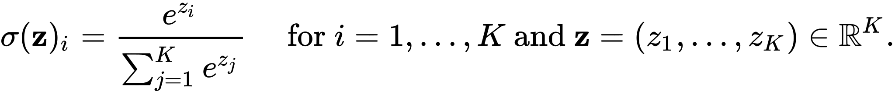

activation and loss functions for classification
For regression problems, we typically use "linear" activation for the output neuron, which is equivalent to taking the raw output from the output neuron and not applying any nonlinear activation function. So, the output of a neural network used for regression is typically a real-valued number (ie, a "floating point" number), which can be anywhere between -∞ and +∞.
In the case of object classification, we want the neural network to output a predicted 'class label' for each data sample. For one-hot-encoded class labels, the class label is 'encoded' as a binary vector with dimension equal to the number of possible classes. The one-hot-encoded class label has zero entries for every class except the class the data sample belongs to, which gets an enty of one.
We can get our neural network to output a k-dimensional vector by setting the output layer of the network to have k neurons or "units". But, how do we get the output layer to produce one-hot-encoded outputs?
Well, in reality, we don't want our netowrk to output one-hot-encoded object classification predictions. For labelled data in which we know the correct classification with absolute certainty, one-hot encoding makes sense. If we know the correct class label, we can set the probability of the correct class to 1.0, and we can set the probability of every other possible class to 0.0; this is exactly what one-hot encoding does!
But, when we are predicting an object's class, we'd prefer the predictive model to output a probability distribution over all possible classes, where the value assigned to each possible class label represents the probability that the data sample came from that class, and the sum of the probabilities over all possible classes is 1.0. This allows us to assess the confidence of the model in its prediction.
Let's look at an example. Let's say we want to classify images as either "dog", "cat" or "human". If we assume this ordering, we can one-hot encode an image of a dog as the vector (1,0,0), a cat as the vector (0,1,0) and an image of a human as (0,0,1). But what if we are certain an image is not a human, but it could be either a dog or a cat? We could encode this information as the vector (0.5,0.5,0). This is not a one-hot encoding! But if we 'read' this vector as a probability distribution, it does encode the information that we are certain the image is not a human, because the probability of the "human" entry is zero. Also, the probability that the image is a "dog" is 0.5, and the probability that it is a "cat" is 0.5.
In general, we could encode any ambiguous classification as a probability distribution over the three possible classes, in this case. For example, if we are 95% certain an image is a human, we could encode this information as the classification vector (0.025,0.025,0.95), assuming we are equally unsure about whether the image could be a dog or a cat. So long as each of the vector entries is ≥0 and they all sum to 1.0, the vector is a valid probability distribution over the possible classes. These probability distributions are by far the most common way to encode the output of neural network classifiers.
The "softmax" activation function is a 'special' activation function that converts the output of a neural network layer into a probability distribution over the number of neurons ("units") in the layer.
Unlike a 'typical' activation function, "softmax" activation is not applied independently to each of the neuron's outputs. Rather, softmax activation combines the outputs from all of the neurons in the layer and converts those outputs into a probability distribution (ie, each output is ≥0, and the sum of all the outputs is 1.0).
Technically, the softmax activation function is given by the equation:
where z are the raw neuron outputs, and there are K possible class labels. The important thing to notice is that each neuron's activation is divided by the sum of all the activations from all the neurons in the layer, effectively normalizing the activations to sum to 1.0. Raising e to the power of the activation ensures that each of the activations is ≥0. So, softmax activation produces a probability distribution over all output neurons, given the raw neuron outputs.
When there are only two possible classes, this is called "binary classification", and it is often treated a little differently than when there are more than two possible classes.
XX.
XX.